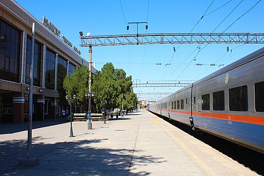
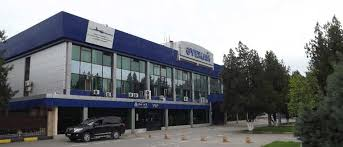

The city is a major railroad junction in the Turkestan-Siberia Railway. All passenger trains are operated by Kazakhstan Temir Zholy. The express trains using comfortable Tulpar Talgo rolling stock. The Bus service uses modern Yutong CNG buses to reach close to every corner of the city and also decrease the air pollution of the region.[26] A bicycle-sharing system operates in Shymkent with 40 stations around the city.[27] At some parks and public places are also e-scooters are available for sharing.
Currently, there are over two thousand streets in the city, the total length of all streets and roads is 2135 km. Major roads passing through Shymkent include M32 (to Aktobe, Oral and Samara) and A2 (Tashkent and Almaty).
The Shymkent International Airport was opened in 1932 and is located 12 km northwest of the city center. The airport offers air connections to all major cities in Kazakhstan and with like Dubai, Moscow and Istanbul also international connections. Another small airfield is located near Sairam and is used mostly for sport and agriculture flights.
